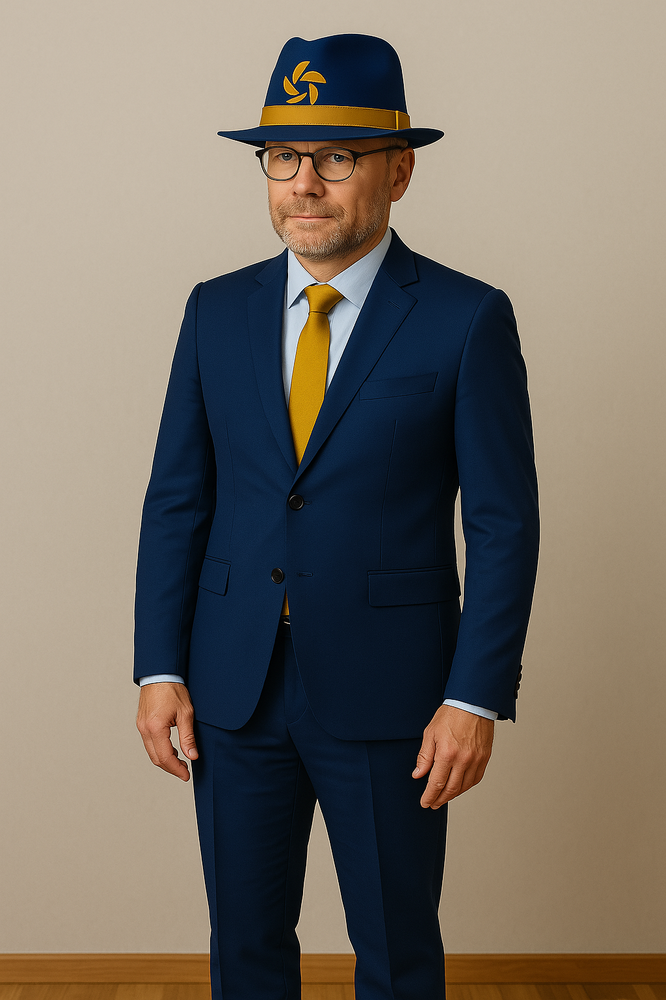

Michael Fitzner
Position: Parteivorsitzender
Michael Fitzner ist der Gründer und Vorsitzende der Michi Partei. Er setzt sich für Innovation, Technologie und soziale Gerechtigkeit ein.
Gemeinsam für eine bessere Zukunft!
Das Kabinett der Michi Partei (MP) besteht aus engagierten und kompetenten Mitgliedern, die sich für die Ziele und Werte unserer Partei einsetzen.
Position: Parteivorsitzender
Michael Fitzner ist der Gründer und Vorsitzende der Michi Partei. Er setzt sich für Innovation, Technologie und soziale Gerechtigkeit ein.
Position: Leiter der Teilstreitkraft EloKa
Thorsten Clever ist ein erfahrener IT-Experte und leitet die Teilstreitkraft EloKa der Michi Partei. Er ist verantwortlich für die strategische Planung und Umsetzung von IT-Projekten.